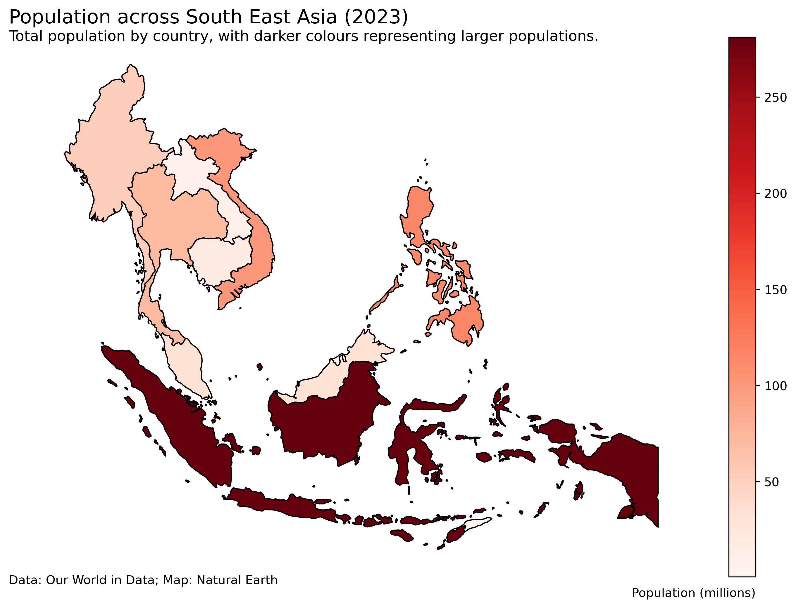

South East Asia 2/10/2026

i decided to make a choropleth map showing how population is distributed across South East Asia in 2023. Used the same database from Our World in Data and filtered it to the 11 SEA countries. Someone recommended Natural Earth on Reddit. I had to use the 1:50m resolution data because the 1:110m dataset did not include Singapore. Filtered out the non-SEA countries from the map data and merged it with the population dataset.
Data Card
| Title | Population across South East Asia (2023) |
| Summary | This data visualisation shows a choropleth map showing the total population across the 11 South East Asian countries in 2023. Population is represented with a colour gradient scale, with the darker colours indicating countries with larger populations. |
| Data Sources |
Population
Kees, K. G. (2023). History database of the global environment 3.3 - data publication platform of Utrecht University. Yoda.Uu.Nl. Retrieved October 2, 2026, from https://doi.org/DOI:10.24416/UU01-AEZZIT GD003. (n.d.). GapMinder. Retrieved October 2, 2026, from https://www.gapminder.org/data/documentation/gd003/ United Nations. (2024). World population prospects. Un.Org. Retrieved October 2, 2026, from https://population.un.org/wpp/downloads?folder=Standard%20Projections&group=Most%20used Map Natural earth - Countries - free vector and raster map data at 1:10M, 1:50M, and 1:110M scales. (2009, September 21). Natural Earth. Retrieved October 2, 2026, from https://www.naturalearthdata.com/downloads/50m-cultural-vectors/50m-admin-0-countries-2/ |
| Mapping | Colour: Total population in 2023 |
| Important Notes | Singapore is there I promise |
| Access |
Population
https://ourworldindata.org/grapher/population?tab=discrete-bar&time=latest&country=BRN~KHM~IDN~LAO~MYS~MMR~PHL~SGP~THA~TLS~VNM&mapSelect=BRN~KHM~IDN~LAO~MYS~MMR~PHL~SGP~THA~TLS~VNM&globe=1&globeRotation=7.46%2C113.96&globeZoom=2.5&overlay=download-data Map https://www.naturalearthdata.com/downloads/50m-cultural-vectors/50m-admin-0-countries-2/ |
Acknowledgement of generative "AI" use
I used ChatGPT (OpenAI, 2026) in module 8 to help troubleshoot my python code, specificly the position of the texts in the visualisation.